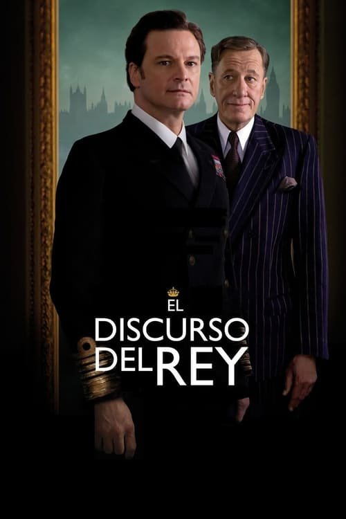
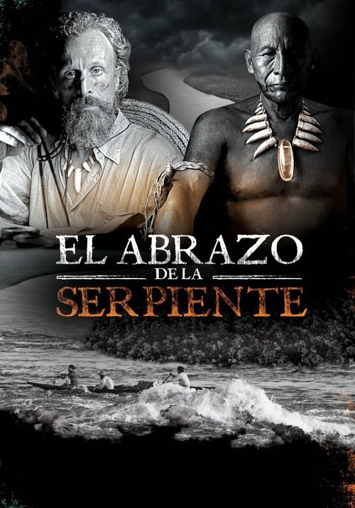

Lo Mejor del Cine de Drama Histórico
Descubre la mejor selección de películas de Drama Histórico. Encuentra joyas ocultas y recomendaciones para tu próximo maratón.
- 
El discurso del rey (2010)
Un rey con una tartamudez devastadora debe encontrar su voz para liderar una nación al borde de la guerra. ¿Podrá superar sus demonios internos y convertirse en el símbolo de esperanza que su pueblo necesita?

Ida (2013)
Una novicia polaca a punto de tomar sus votos descubre un secreto familiar que la obligará a confrontar un pasado oscuro y doloroso durante la ocupación nazi, desencadenando un viaje de autodescubrimiento y redención.
- 
El abrazo de la serpiente (2015)
En lo profundo de la Amazonia, un encuentro entre un chamán anciano y un etnobotánico desata un viaje alucinante a través del tiempo, donde la memoria, la traición y la búsqueda de una planta sagrada se entrelazan en un drama inolvidable.

Cuentos de la luna pálida (1953)
En el Japón feudal, la codicia y la ambición desatan una espiral de violencia y consecuencias devastadoras cuando dos campesinos se ven envueltos en un conflicto que pone a prueba su moral y sus vidas.

La pasión de Juana de Arco (1928)
En el fragor de la Guerra de los Cien Años, una joven campesina guiada por visiones divinas se convierte en heroína nacional, solo para enfrentar una condena brutal por herejía. ¿Es Juana de Arco una santa o una bruja?

Roma (2018)
En la Ciudad de México de los años 70, una empleada doméstica observa y experimenta los cambios de una familia disfuncional mientras enfrenta sus propios dilemas personales.

The Crown (2016)
Del glamour a la tragedia: adéntrate en la vida privada de la Reina Isabel II y sus reinados, repleta de secretos, escándalos y decisiones que cambiaron el curso de la historia británica.